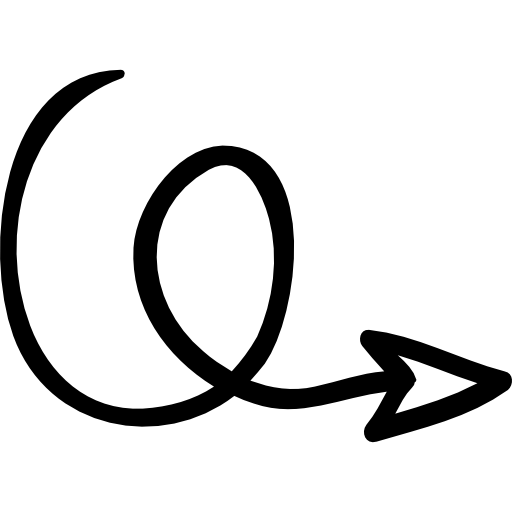

Phone Myint Zaw
the dark knight rises


A creative tech enthusiast.
I come from a tech background. But as I found the creative skillsets in me, I spend a year in media production as a content producer for my creative craving. Creative writing, creative design, creative arts and I am working as a freelancer in my free time. Now I turned back to my professional work environment as a Frontend developer. Combining the newest and cutting-edge technologies and my creative skillsets, I want to do more and more creative products and Web Designs.
My Specialities includes, willingness to learn new things, new technologies, quickly learning, flexibility, problem solving skills, excellent communications and a cool personality. As technical skills, I am a professional in HTML, CSS, JavaScript, React, Bootstrap, PHP. And I am learning new technologies and trying to be a UI UX Designer and a full stack developer in near future.

UI UX, Web Design, Logo Design
I have a great interest in Anthropology, History, Music, Film and Tech gadgets. I believe in humanity, diversity and always looking forward to a better community, better society to make the world a better place.